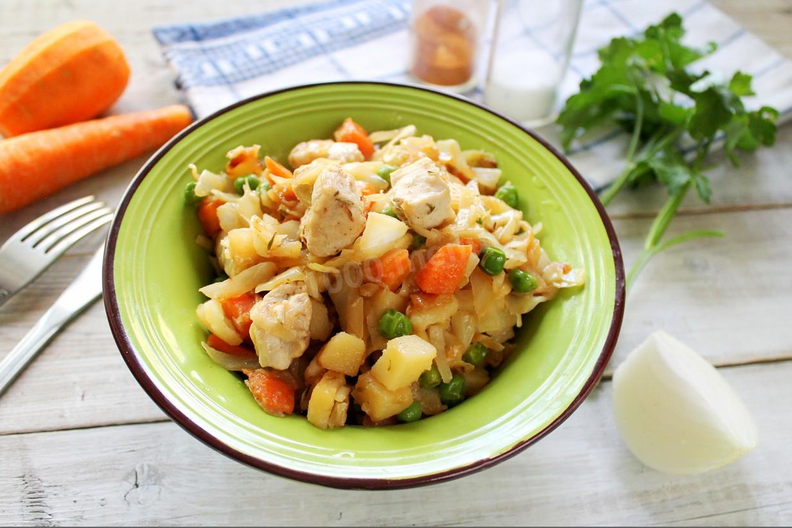

Ингредиенты блюда "Рагу из курицы"

- куриное филе 400 г, картофель 400 г, кабачки 400 г, лук 200 г, чеснок 2-3 зубчика, морковь 100 г, соль 1/2 ч. ложки, перец чёрный молотый по вкусу, масло растительное для жарки
Заказать блюдо "Пеперонни"

- Тесто для пиццы, Сыр моцарелла, Оливковое масло, Сырокопченая колбаса, Перец чили, Помидоры в собственном соку, Орегано, Сушеный базилик, Чеснок, Сахар, Соль, Молотый черный перец